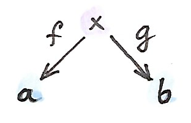
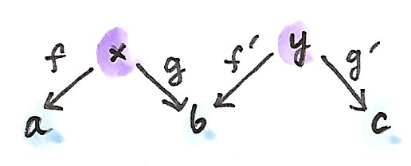

32 Monads Monoids และ Categoryต่างๆ (Sketch)
ไม่มีที่ใหนที่เหมาะสมกับจากจบหนังสือที่เกี่ยวกับทฤษฎีcategory ได้มีสิ่งใหม่ที่ต้องเรียนรู้ตลอดเวลา ทฤษฎีcategoryเป็นวิชาที่กว้าง ในเวลาเดียวกันมันชัดเจนว่ามีธีม แนวคิดและรูปแบบเดียวกันได้โผล่ออกมาหลายต่อหลายครัง ได้มีคำกล่าวว่าทุกๆแนวคิดคือแนวคิดทั้งหมดคือส่วนขยายKan และแน่นอนว่าคุณสามารถใช้ส่วนขยายKanในการได้มาซึ่งlimits, colimits, adjunctions, monads, Yoneda lemmaและอื่นๆ ความเป็นcategoryมันเองโผล่มาในทุกระดับของabstraction และแนวคิดของmonoidและmonadก็เช่นกัน แล้วอะไรคือสิ่งที่พื้นฐานที่สุดละ? มันกลับมาเป็นว่าพวกมันนั้นมีความสัมพันธ์ระหว่างกัน สิ่งหนึ่งนำไปยังอีกสิ่งหนึ่งในวงจรที่ไม่มีที่สิ้นสุดของการabstractions ผมตัดสินใจว่าการแสดงความสัมพันธ์ระหว่างกันเหล่านี้อาจจะเป็นวิธีที่ดีในการจบหนังสือเล่มนี้
32.1 Bicategories
หนึ่งในด้านที่ยากที่สุดของทฤษฎีcategoryนั้นคือการเปลี่ยนมุมมองไปมา ลองนำcategoryของsetเป็นตัวอย่าง เราได้ใช้ในการนิยามsetในรูปแบบของสมาชิก setว่างนั้นไปมีสมาชิก setที่มีสมาชิกเดียวก็มีสมาชิกเดียว productแบบCartesianของสองsetคือsetของคู่และอื่นๆ แต่ในตอนที่เราพูดเกี่ยวกับcategory\(\textbf{Set}\) ผมของให้คุณได้ลืมเกี่ยวกับเนื้อหาของsetและหันมาสนใจบนmorphisms(ลูกศร)ระหว่างพวกมัน คุณนั้นได้รับอณุญาติ ในบางเวลาในการส่องเข้าไปภายใต้สิ่งคลุมอยู่ในการดูว่าการสร้างแบบสากลบางประเภทใน\(\textbf{Set}\)ถูกอธิบายในรูปแบบของสมาชิกต่างๆ วัตถุสุดท้ายกลายมาเป็นsetที่มีสมาชิกเดียวและอื่นๆ แต่สิ่งเหล่านี้เป็นแค่การตรวจสอบให้มั่นใจ
functorถูกนิยามในฐานะการโยงของcategoryต่างๆ มันเป็นธรรมชาติในการพิจารณาการโยงในฐานะmorphismในcategory functorกลายมาเป็นmorphismในcategoryของcategoryต่างๆ(categoryขนาดเล็ก ถ้าเราต้องการที่จะหลีกหนีเกี่ยวกับขนาด) โดนการมองfunctorในฐานะลูกศร เราละทิ้งข้อมูลเกี่ยวกับการกระทำของมันบนส่วนที่อยู่ข้างในของcategory(นั้นคือวัตถุและmorphisms)แค่เหมือนกับการที่เราละทิ้งข้อมูลเกี่ยวกับการกระทำของfunctionบนสมาชิกของsetในตอนที่เรามองมันในฐานะลูกศรใน\(\textbf{Set}\) แต่functorระหว่างสองcategoryใดๆก็ตามก็ก่อให้เกิดcategory ในเวลานี้คุณถูกถามในการพิจารณาบางอย่างที่เคยเป็นลูกศรในcategoryหนึ่งในการเป็นวัตถุของอีกตัวหนึ่ง ในcategoryแบบfunctor functorคือวัตถุและการแปลแบบธรรมชาติคือmorphisms เราได้ค้นพบว่าสิ่งเดียวกันสามารถเป็นลูกศรในcategoryหนึ่งและเป็นวัตถุในอีกตัวหนึ่ง มุมมองแบบตรงๆของวัตถุในฐานะคำนามและลูกศรในฐานะคำกริยาไม่ถูกต้องอีกแล้ว
แทนที่จะสลับระหว่างสองมุมมอง เราสามารถพยายามในการรวมพวกมันไปเป็นตัวหนึ่ง นี้คือวิธีการที่เราจะได้มาซึ่งแนวคิดของ\(\textbf{2}\)-categoryที่วัตถุนั้นถูกเรียกว่า\(0\)-cell morphismคือ\(1\)-cellsและmorphismระหว่างmorphismsคือ\(2\)-cells

categoryของcategory\(\textbf{Cat}\) นั้นคือตัวอย่างที่ชัดเจน เรามีcategoryในฐานะ\(0\)-cell functorในฐานะ\(1\)-cell และการแปลงแบบธรรมชาติในฐานะ\(2\)-cell กฎต่างๆของ\(\textbf{2}\)-categoryบอกเราว่า\(1\)-cellระหว่างสอง\(0\)-cellไดๆก็ตามก่อให้เกิดcategory(ในอีกความหมายหนึ่ง\(\textbf{C}(a,b)\)คือhom-categoryแทนที่จะเป็นhom-set) สิ่งนี้เข้ากันได้ดีกับเงื่อยไขของเราก่อนหน้านี้ที่functorระหว่างสองcategoryใดๆก็ตามก่อให้เกิดcategoryแบบfunctor
โดยเฉพาะเช่น \(1\)-cellจาก\(0\)-cellsใดๆก็ตามกลับไปหาตนเองก็ก่อให้เกิดcategory hom-category\(\textbf{C}(a,a)\) แต่categoryนั้นมีโครงสร้างมากกว่า สมาชิกของ\(\textbf{C}(a,a)\)สามารถถูกมองในฐานะลูกศรใน\(\textbf{C}\)หรือในฐานะวัตถุใน\(\textbf{C}(a,a)\) ในฐานะลูกศร พวกมันสามารถถูกประกอบในระหว่างตัวมันเอง แต่ในตอนที่เรามองของพวกมันในฐานะวัตถุ การประกอบกันกลายมาเป็นการโยงระหว่างคู่ของวัตถุไปยังวัตถุ ในความเป็นจริงมันดูเหมือนอย่างมากกับproduct (ถ้าให้แม่นยำมันคือเป็นproductแบบtensor) productแบบtensorนี้มีunitคือ\(1\)-cellที่เป็นidentity มันกลับมาเป็นว่าใน\(\textbf{2}\)-category hom-category \(\textbf{C}(a,a)\)นั้นคือcategoryแบบmonoidโดยอัตโนมัติกับproductแบบtensorนิยามในฐานะการประกอบกันของ\(1\)-cell กฏการสลับหมู่และunitก็ตามมาจากกฏของcategoryที่เป็นคู่กัน
เรามาดูว่าสิ่งนี้หมายความว่าอะไรในตัวอย่างมาตราฐานของ\(\textbf{2}\)-category\(\textbf{Cat}\) hom-category \(\textbf{Cat}(a,a)\)คือcategoryของendofunctorsบน\(a\) การปรพะอบกันของendofunctorsมีบทบาทของproductแบบtensorในมัน functor identityคือunitของproductนี้ เราได้เห็นมาก่อนหน้านี้ว่าendofunctorก็ให้เกิดcategoryแบบmonoid(เราฝช้ความจริงในนิยามของmonad) แต่ในตอนนี้เราเห็นว่านี้คือปรากฏการณ์ที่ทั่วไปมากกว่านี้คือ endo-1-cellsใน\(\textbf{2}\)-categoryใดๆก็ตามก่อให้เกิดcategoryแบบmonoid เราจะกลับมากันในสิ่งนี้ในภายหลังในตอนที่เราได้วางนียแบบทั่วไปของmonad
คุณอาจจะจำได้ว่าในcategoryแบบmonoidทั่วไป เราไม่ได้ย้ำถึงกฏของmonoidที่ถูกบรรลุแบบตรงๆ มันนั้นมักจะเพียงพอแล้วสำหรับกฏของunitและกฏการสลับกลุ่มในการที่จะถูกบรรลุจนไปถึงisomorphism ในง\(\textbf{2}\)-category กฏทางmonoidใน\(\textbf{C}(a,a)\)ตามมาจากกฎการประกอบกันของสำหรับ\(1\)-cell กฏเหล่านี้นั้นเคร่งครัด ดังนั้นเราจะได้มาซึ่งcategoryแบบmonoidที่เคร่งครัดโดยตรอด แต่มันนั้นเป็นไปได้ในการผ่อนกฏเหล่านี้ไปด้วยกัน ตัวอย่างเช่นเราสามารถพูดได้ว่าการประกอบกันของ\(1\)-cell identity \(\operatorname{id}_a\)กับอีก\(1\)-cell\(f::a\to b\)นั้นisomorphicแทนที่จะเท่ากับ\(f\) isomorphismของ\(1\)-cellนั้นถูกนิยามโดยการใช้\(2\)-cell ในอีกความหมายหนึ่งได้มี\(2\)-cellอย่าง
\[ \rho :: f\circ\operatorname{id}_a\to f \]
ที่มีinverse

เราสามารถทำแบบเดียวกันสำหรับidentityด้านช้ายและกฏการสลับกลุ่ม \(\textbf{2}\)-category ที่ไม่เคร่งครัดมากถูกเรียกว่าbicategory(ได้มีกฏความสอดคล้องกันที่ผมจะละเว้นไว้ในที่นี้)
ในการที่คาดไว้ endo-\(1\)-cellในbicategoryก่อให้เกิดcategoryแบบmonoidทั่วไปที่มีกฏที่ไม่เคร่งครัด
ตังอย่างที่สำคัญของbicategoryคือcategoryของspan spanระหว่างสองวัตถุ\(a\)และ\(b\)คือวัตถุ\(x\)และคู่ของmorphisms
\[ \begin{gather*} f :: x \to a \\ g :: x \to b \end{gather*} \]

คุณอาจจะจำได้ว่าเราได้ใช้spanในนิยามของproductแบบcategory ในที่นี้เราต้องการที่จะมองในที่spansในฐานะ\(1\)-cellในbicategory เริ่มแรกคือการนิยามการประกอบกันของspans
\[ \begin{gather*} f' :: y \to b \\ g' :: y \to c \end{gather*} \]

การประกอบกันควรที่จะเป็นspanที่สมากับบางยอด\(z\) ตัวเลือกที่เป็นธรรมชาติที่สุดสำหรับมันคือpullbackของ\(g\)กับ\(f'\) จำได้ว่าpullbackคือวัตถุ\(z\)คู่กับสองmorphismsอย่าง
\[ \begin{gather*} h :: z \to x \\ h' :: z \to y \end{gather*} \]
ในการที่ว่า
\[ g \circ h = f' \circ h' \]
ที่เป็นสากลกับวัตถุทั้งหมดแบบนี้
ต่อจากนี้เรามาเพ่งเล็งไปยังspansบนcategoryของset ในกรณีนี้ pullbackคือแค่setของคู่\((p,q)\)จากproductแบบCartesian \(x\times y\)ในแบบที่ว่า
\[ g\ p = f'\ q \]
morphismระหว่างสองspanที่มีด้านจบเดียวกันนั้นถูกนิยามในฐานะmorphism\(h\)ระหว่างปลายของมัน ในการที่ว่าtriangleที่เหมาะสมcommuteกัน

โดยสรุปแล้วในbicategory\(\textbf{Span}\) \(0\)-cellคือset \(1\)-cellsคือspan \(2\)-cellคือmorphismของspan \(1\)-cell identityคือspanแบบลดรูป(degenerate)ที่ทั้งสมวัตถุนั้นคือตัวเดียวกันและสองmorphismคือidentity
เราได้เห็นอีกตัวอย่างหนึ่งของbicategoryก่อนหน้านี้คือbicategory\(\textbf{Prof}\)ของprofunctiosที่ \(0\)-cellคือcategory \(1\)-cellคือprofunctorและ\(2\)-cellคือการแปลงแบบธรรมชาติ การประกอบกันของprofunctorนั้นให้มาโดยcoend
32.2 Monads
จนถึงตอนนี้คุณควรที่จะมีความคุ้นชินกับนิยามของmonadในฐานะmonoidในcategoryของendofunctors เรากลับมาหานิยามนี้อีกครั้งกับความเข้าใจใหม่ว่าcategoryของendofunctorsคือแค่hom-categoryขนาดเล็กหนึ่งของendo-1-cells ในbicategory\(\textbf{Cat}\)เรารู้ว่ามันคือcategoryแบบmonoidที่productแบบtensorมาจากการประกอบกันของendofunctor monoidนั้นถูกนิยามในฐานะวัตถุในcategoryแบบmonoid(ในที่นี้คือก็จะเป็นendofunctor\(T\))คู่กับmorphismสองตัว morphismsระหว่างendofunctorต่างๆนั้นคือการแปลงแบบธรรมชาติ morphismหนึ่งโยงunitแบบmonoid (ที่คือendofunctor identity)ไปยัง\(T\)
\[ \eta :: I\to T \]
morphismที่สองโยงproductแบบtensor \(T\otimes T\)ไปยัง\(T\) productแบบtensorนั้นให้มาโดยการประกอบกันของendofunctor ดังนั้นเราได้
\[ \mu :: T\circ T\to T \]

เราสังเกตสิ่งนี้ในฐานะสองoperationsทำการนิยามmonad(พวกมันถูกเรียกว่าreturnและjoinในHaskell)และเรารู้ว่ากฎmonoidเปลี่ยนไปเป็นกฏของmonad
ในตอนนี้เรามามำสิ่งที่พูดถึงendofunctorออกทั้งหมดจากนิยามนี้ เราเริ่มด้วยbicategory\(\textbf{C}\)และเลือก\(0\)-cell\(a\)ในมัน ในการที่เราได้เหห็นก่อนหน้านี้hom-category\(\textbf{C}(a,a)\)คือcategoryแบบmonoid ดังนั้นเราสามารถนิยามmonoidใน\(\textbf{C}(a,a)\)โดยการเลือก1-cell\(T\)และ\(2\)-cellอย่าง
\[ \begin{align*} \eta & :: I \to T \\ \mu & :: T \circ T \to T \end{align*} \]
ที่บรรลุกฏของmonoid เราเรียกสิ่งนี้ว่าmonad

นั้นคือนิยามที่กว้างที่สุดของmonadโดยการใช้แค่\(0\)-cell \(1\)-cellและ\(2\)-cell มันลดไปยังmonadทั่วๆไปในตอนที่ใช้มันกับbicategory\(\textbf{Cat}\) แต่เรามาดูว่าเกิดอะไรขึ้นในbicategoriesอื่นๆ
เรามาสร้างmonadใน\(\textbf{Span}\) เราเลือก\(0\)-cellที่คือsetที่ ในสำหรับเหตุผลที่จะชัดเจนมากขึ้นหลังจากนี้ ผมจะเรียกว่า\(\text{Ob}\) ต่อมาเราเลือก endo-1-cellที่คือspanจาก\(\text{Ob}\)ไปยัง\(\text{Ob}\) มันมีsetที่จุดยอดที่ผมจะเรียกว่า\(\text{Ar}\)ร่วมกับสองfunctionsอย่าง
\[ \begin{align*} \text{dom} & :: \text{Ar} \to \text{Ob} \\ \text{cod} & :: \text{Ar} \to \text{Ob} \end{align*} \]

เราจะเรียกสมาชิกของset\(\text{Ar}\)ว่า”ลูกศร(arrows)” ถ้าผมก็จะบอกคุณให้เรียกสมาชิกของ\(\text{Ob}\)ว่า”วัตถุ(object)“คุณอาจจะได้คำใบ้ว่าสิ่งนี้จะนำไปสู่อะไร สองfunctions\(\text{dom}\)และ\(\text{cod}\)กำหนดdomainและcodomainไปยัง”ลูกศร”
ในการทำให้spanของเราไปยังmonad เราต้องการสอง\(2\)-cell \(\eta\)และ\(\mu\) unitแบบmonoidในกรณีนี้คือspanแบบตรงไปตรงมาจาก\(\text{Ob}\)ไปยัง\(\text{Ob}\)กับจุดยอดที่\(\text{Ob}\)และสองfunctions identity \(2\)-cell \(\eta\)คือfunctionระหว่างปลาย\(\text{Ob}\)และ\(\text{Ar}\) ในอีกความหมายหนึ่ง\(\eta\)กำหนด”ลูกศร”ไปยังทุกๆ”วัตถุ” \(2\)-cellใน\(\textbf{Span}\)ต้องบรรลุเงื่อนไขการสลับหมู่ในกรณีนี้
\[ \begin{align*} \text{dom} & \circ \eta = \operatorname{id} \\ \text{cod} & \circ \eta = \operatorname{id} \end{align*} \]

ในส่วนประกอบนี้แล้วสิ่งนี้กลายมาเป็น
\[ \text{dom}\ (\eta\ \text{ob}) = \text{ob} = \text{cod}\ (\eta\ \text{ob}) \]
ที่\(\text{ob}\)คือ”วัตถุ“ใน\(\text{Ob}\) ในอีกความหมายหนึ่ง\(\eta\)กำหนดไปยังทุกๆ”วัตถุ“และ”ลูกศร”ที่domainและcodomainคือ”วัตถุ“นั้น เราจะเรียก”ลูกศร”พิเศษนี้ว่า”ลูกศรidentity”
\(2\)-cellตัวที่สอง\(\mu\)กรระทำบนการประกอบกันของspan\(\text{Ar}\)กับตัวมันเอง การประกอบกันนั้นถูกนิยามในฐานะpullback ดังนั้นสมาชิกของมันคือคู่ของสมาชิกจาก\(\text{Ar}\)(คู่ของ”ลูกศรต่างๆ”\((a_1,a_2)\)) เงื่อนไขจของpullbackคือ
\[ \text{cod}\ a_1 = \text{dom}\ a_2 \]
เราเรียกว่า\(a_1\)และ\(a_2\)ว่า”ประกอบได้“เพราะว่าdomainของตัวหนึ่งคือcodomainของอีกตัวหนึ่ง

\(2\)-cell \(\mu\)คือfunctionที่โยงคู่ของลูกศรที่สามารถประกอบกันได้\((a_1, a_2)\)ไปยังลูกศรเดี่ยว\(a_3\)จาก\(\text{Ar}\) ในอีกความหมายหนึ่ง\(\mu\)นิยามการประกอบกันของลูกศร
มันง่ายที่จะตรวจสอบว่ากฏmonadคู่กับidentityและกฏการสลับหมู่ตรงกับลูกศร เราได่แค่นิยามcategory(ย้ำว่าcategoryขนาดเล็กในที่วัตถุและลูกศรก่อให้เกิดset)
ดังนั้นโดยสรุป categoryคือแค่monadในbicategoryของspans
สิ่งที่สุดยอดเกี่ยวกับผลลัพธ์นี้คือว่ามันวางcategoryในระดับเดียวกันกับโครงสร้างทางพีชคณิตอย่างmonadและmonoids ได้ไม่มีความพิเศษเกี่ยวกับการเป็นcategory มันคือสองsetและสี่function ในความเป็นจริงแล้วเราไม่ต้องการsetแยกสำหรับวัตถุ เพราะว่าวัตถุสามารถถูกนิยามด้วยarrow identity(พวกมันตรงกับแบบหนึ่งต่อหนึ่ง) ดังนั้นมันคือแค่setและบางfunction เมื่อพิจารณาถึงบทบาทที่สำคัญของทฤษฎีcategoryในคณิตศาสตร์ทั้งหมด มันเป็นความเข้าใจที่ถ่อมตน
32.3 โจทย์ท้าทาย
- ลองสร้างกฏunitและการสลับหมู่สำหรับproductแบบtensorที่ถูกนิยามในฐานะการประกอบกันของendo-1-cellsในbicategory
- ลองทดสอบว่ากฏของmonadสำหรับmonadใน\(\textbf{Span}\)ตรงกับกฏunitและการสลับหมู่ในcategoryที่ได้มา
- ลองแสดงว่าmonadใน\(\textbf{Prof}\)คือfunctor identityบนวัตถุ
- อะไรคือalgebraแบบmonadสำหรับmonadใน\(\textbf{Span}\)
32.4 บรรณานุกรม
- BlogของPaweł Sobociński1
(Page 342) (Page 345)